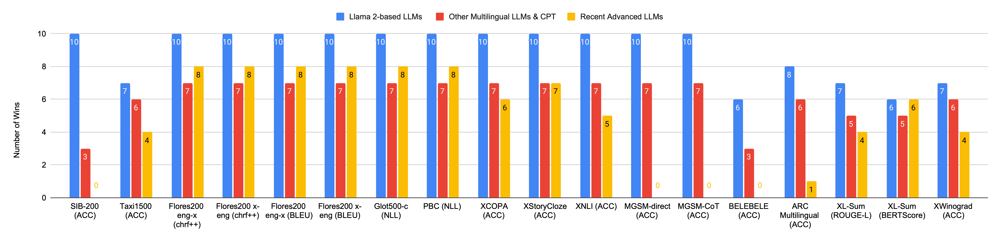

In this work, we introduce EMMA-500, a large-scale multilingual language model continue-trained on texts across 546 languages designed for enhanced multilingual performance, focusing on improving language coverage for low-resource languages. To facilitate continual pre-training, we compile the MaLA corpus, a comprehensive multilingual dataset enriched with curated datasets across diverse domains. Leveraging this corpus, we conduct extensive continual pre-training of the Llama 2 7B model, resulting in EMMA-500, which demonstrates robust performance across a wide collection of benchmarks, including a comprehensive set of multilingual tasks. Our results highlight the effectiveness of continual pre-training in expanding large language models' language capacity, particularly for underrepresented languages, demonstrating significant gains in cross-lingual transfer, task generalization, and language adaptability. We release the MaLA corpus, EMMA-500 model weights, scripts, and model generations.
| Corpus Name | Notes |
|---|---|
| 🤗 MaLA-LM/mala-monolingual-integration | Noisy version integrating texts from different sources without cleaning. |
| 🤗 MaLA-LM/mala-monolingual-filter | Filtered version with further data filtering. |
| 🤗 MaLA-LM/mala-monolingual-dedup | Deduplicated version removing repeated data points. |
| 🤗 MaLA-LM/mala-monolingual-split | Final version, split into training and test sets after filtering and deduplication. |

The number of wins, i.e., the number of times EMMA-500 achieves the best or superior performance compared to other models in the same category across various evaluation tasks and benchmarks. We compare our EMMA-500 Llama 2 7B model to decoder-only LLMs of similar parameter size, including (i) 10 Llama 2-based LLMs, (ii) 7 multilingual LLMs and CPT models, and (iii) 8 recent advanced LLMs. If EMMA-500 scores higher than all compared models on a specific benchmark, it is considered a winning case for that particular evaluation. Our EMMA-500 Llama 2 model outperforms most Llama 2-based, multilingual LLMs and CPT models. Remarkably, our model achieves the best performance on Flores200, Glot500-c, and PBC among all the compared baselines. Check out our paper for details!
@article{ji2024emma,
title={EMMA-500: Enhancing Massively Multilingual Adaptation of Large Language Models},
author={Ji, Shaoxiong and Li, Zihao and Paavola, Jaakko and Lin, Peiqin and Chen, Pinzhen and O'Brien, Dayy{\'a}n and Luo, Hengyu and Sch{\"u}tze, Hinrich and Tiedemann, J{\"o}rg and others},
journal={arXiv preprint arXiv:2409.17892},
year={2024}
}